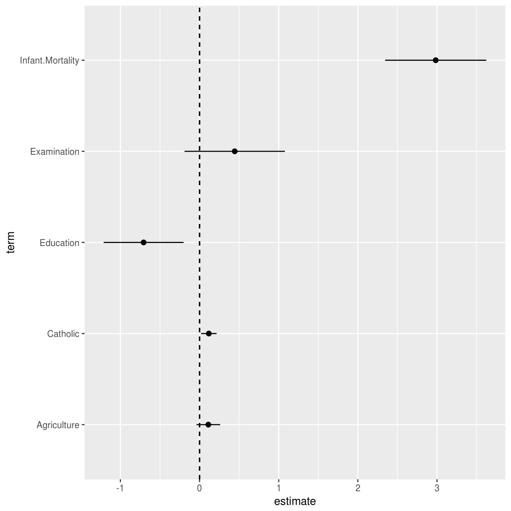
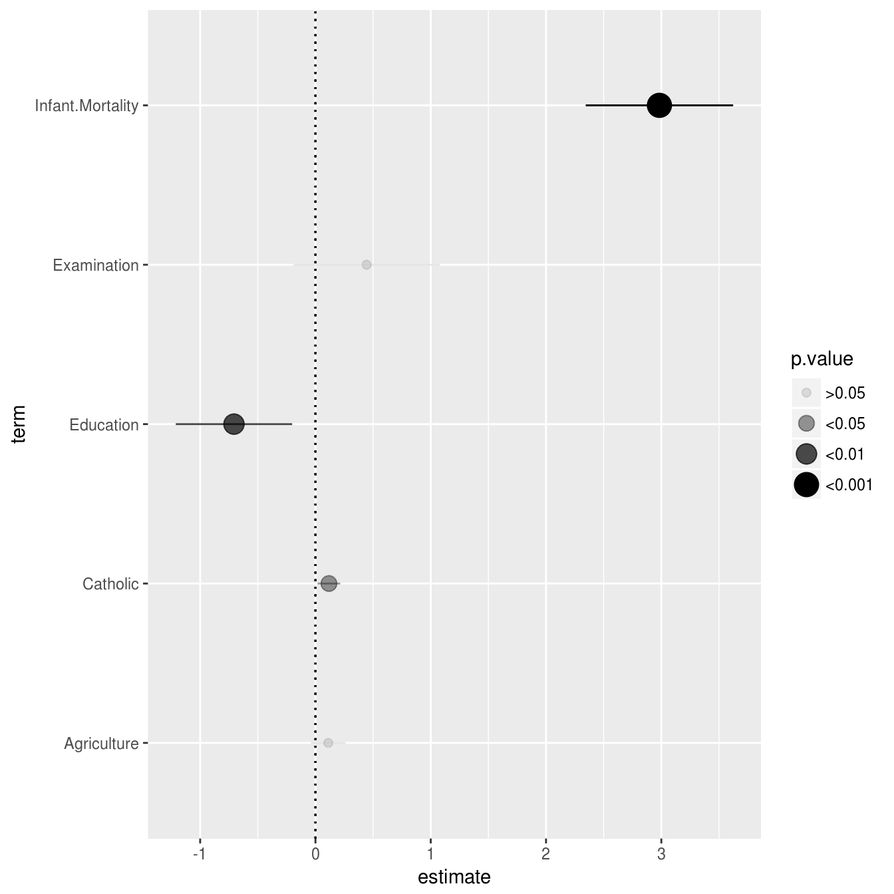
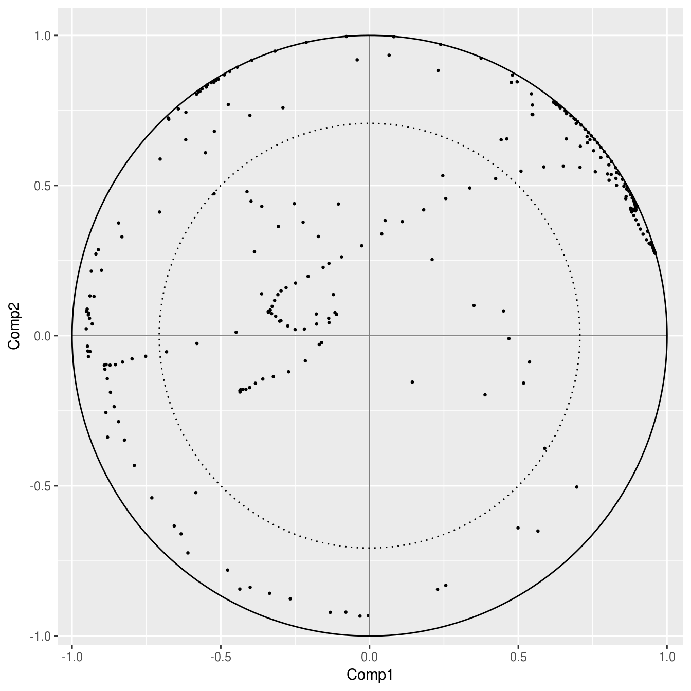
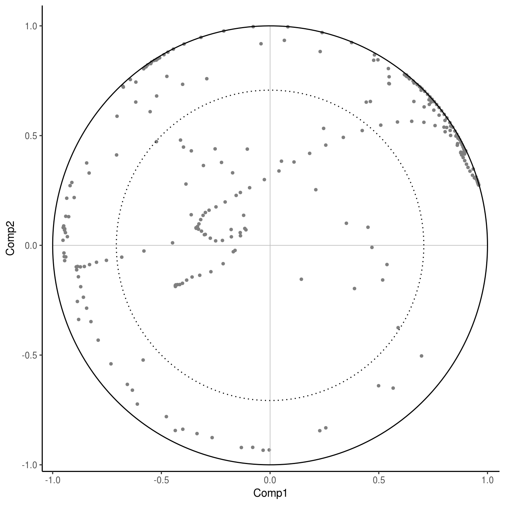

The main aim of the ggepi package is to provide ggplot2 layers for common statistical presentations (at least in epidemiology and at least what I use often). The ggepi package is as hands off as possible. This package assumes what you want to plot is what you want to plot, and lets you have full control over how the plot of the results looks like. When it comes to your data or results you want to plot, all of the work is done by you and done before plotting. The reason I created this package and these functions is because many of the other packages that have similar functionality assume too many things about what data you want to plot and how the plot will look… and it is very difficult to change how these settings. The other thing about other packages is that they don’t make use of ggplot2 ability to extend and add layers. This package creates new geom layers that provide all the full customizability of ggplot2 in a convenient wrapper for common ways of plotting certain types of results. There are of course trade offs to this different way of doing things! After each section there is a list of similar packages. Try the different packages out yourself and find out what works for you!
In most cases, showing a figure of some results is more impactful than showing a table. Often times in epidemiology, results from analyses are put into a table. This is less then ideal for busy researchers, as it takes longer to process and understand the results from a table than it is from a figure. So, for presenting results from a regression type anaylsis (something that creates an estimate and a confidence interval) you can use the geom_estci() layer.
library(broom)
fit <- lm(Fertility ~ 0 + Catholic + Agriculture + Examination + Education +
Infant.Mortality, data = swiss)
fit <- tidy(fit, conf.int = TRUE)
# A quick look at the data:
knitr::kable(fit)| term | estimate | std.error | statistic | p.value | conf.low | conf.high |
|---|---|---|---|---|---|---|
| Catholic | 0.1170662 | 0.0485962 | 2.408958 | 0.0204621 | 0.0189951 | 0.2151373 |
| Agriculture | 0.1110005 | 0.0742354 | 1.495250 | 0.1423257 | -0.0388126 | 0.2608135 |
| Examination | 0.4440591 | 0.3143526 | 1.412615 | 0.1651367 | -0.1903301 | 1.0784483 |
| Education | -0.7067362 | 0.2500898 | -2.825930 | 0.0071866 | -1.2114378 | -0.2020346 |
| Infant.Mortality | 2.9836617 | 0.3168272 | 9.417315 | 0.0000000 | 2.3442785 | 3.6230449 |
Using the geom_estci layer, you have fine-grained control of what it will look like.

There is a utility function discrete_pvalue to convert a numeric p-value into a factor, which makes it easier to visualize the results. So:
fit2 <- transform(fit, p.value = discrete_pvalue(fit$p.value))
p <- ggplot(fit2, aes(x = estimate, y = term, xmin = conf.low, xmax = conf.high,
alpha = p.value, size = p.value))
p + geom_estci(fatten = 1, center.linetype = "dotted")
We can add ends to the error bars too.
All of the power of ggplot2 is available to customize the geom_estci layer. Check out the documentation for the geom_estci function (via ?) as well as the ggplot2 layers e.g. geom_pointrange or geom_point for full customization. Since this is a ggplot2 object, you can add to it all you want, like using facet_grids.
There are a few packages that have similar functionality as the e.g. geom_estci, but each has its own specific use cases:
In both of these packages, they assume you’ll plot directly from the lm or other regression function, so they do a lot of internal data wrangling and managing.
For dimensionality reduction techniques, often it is useful to look at the correlation circle plots. These plots show the correlation between the original values and the scores (or component scores or components or factors) to get a sense of what is going on in the data. So, let’s set up the data.
library(pls)
#>
#> Attaching package: 'pls'
#> The following object is masked from 'package:stats':
#>
#> loadings
data(yarn)
# Set up data to plot. We need to manually calculate the correlations and then
# wrangle the results into the appropriate form (with components columns and the
# variable name column)
fit <- plsr(density ~ NIR, data = yarn)
fit <- cor(model.matrix(fit), scores(fit)[, 1:2, drop = FALSE])
fit <- as.data.frame(fit)
fit$Variables <- rownames(fit)
rownames(fit) <- NULL
colnames(fit)[1:2] <- c("Comp1", "Comp2")
# A quick look at the results:
knitr::kable(head(fit))| Comp1 | Comp2 | Variables |
|---|---|---|
| 0.2462936 | 0.5328411 | NIR1 |
| 0.4613510 | 0.6554178 | NIR2 |
| 0.5463372 | 0.7374684 | NIR3 |
| 0.5442046 | 0.8053808 | NIR4 |
| 0.4801735 | 0.8677665 | NIR5 |
| 0.3749901 | 0.9240111 | NIR6 |
And we can plot it using geom_corr_circle():

And to customize it:
p + geom_corr_circle(
size = 1,
colour = "grey50",
outer.linesize = 0.5,
inner.linesize = 0.5,
center.linecolour = "grey",
center.linesize = 0.3
) +
theme_classic()
If you want to add text to the “highly correlated” variables, I suggest using the ggrepel::geom_text_repel() functions. They are really useful!
These other packages have similar functionality.
biplot.princomp() function in base RHowever, these packages again assume you are plotting directly from a prcomp() or pls::plsr() output, so they do a lot of internal data wrangling. Sometimes you may want more control over what data is plotted. Customizing the display of the plots from these other packages or functions can also be a bit difficult. Here, ggepi is as hands off as possible. You have control over what is plotted and how it looks.